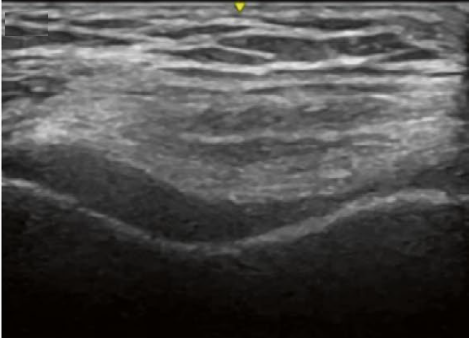
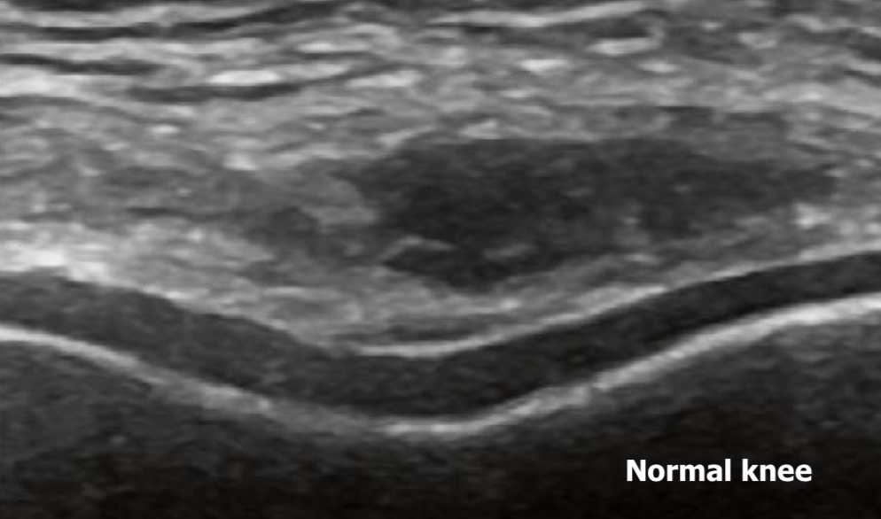
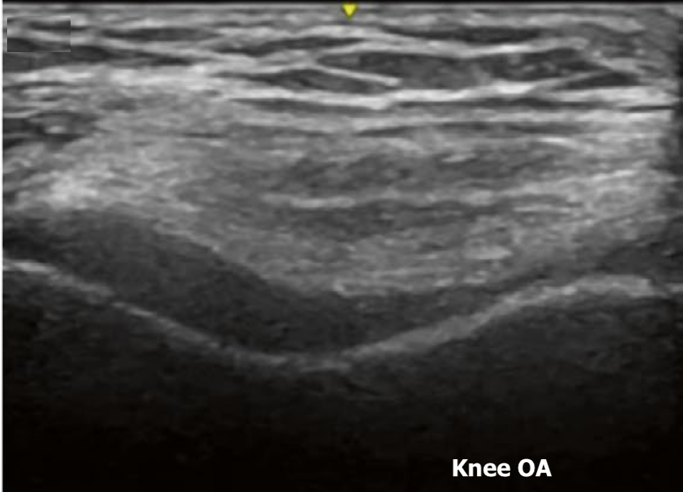
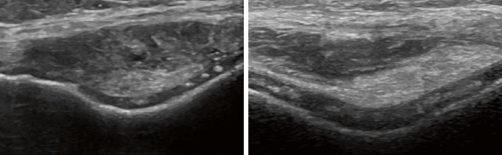
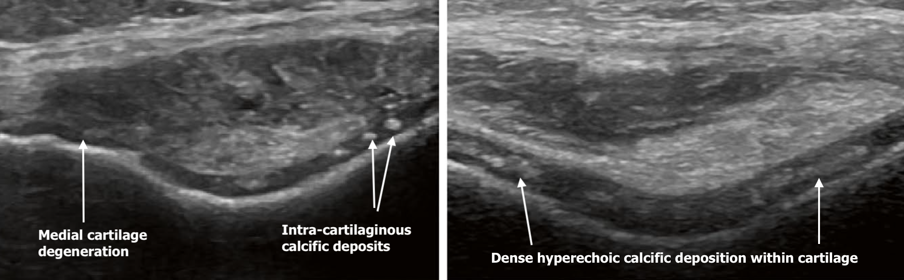
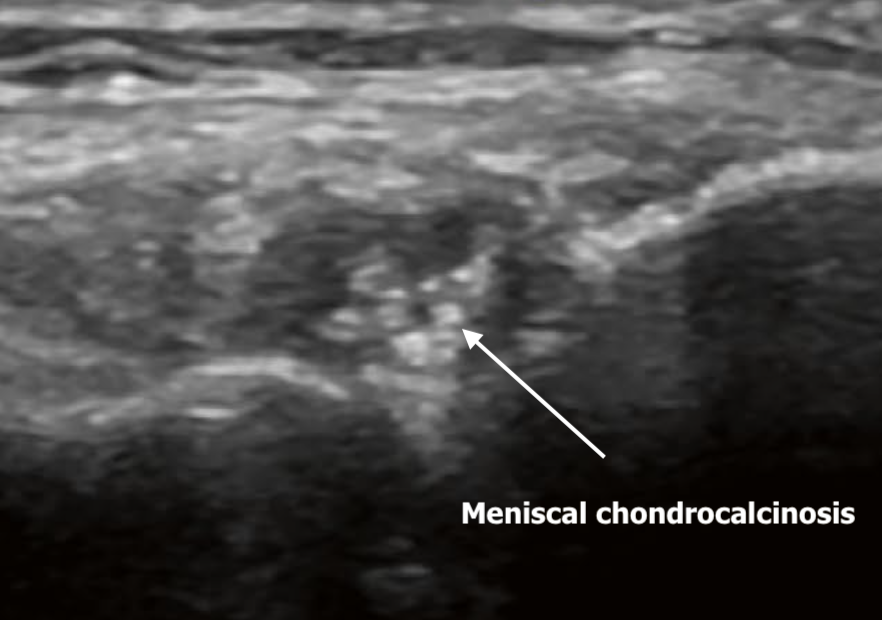
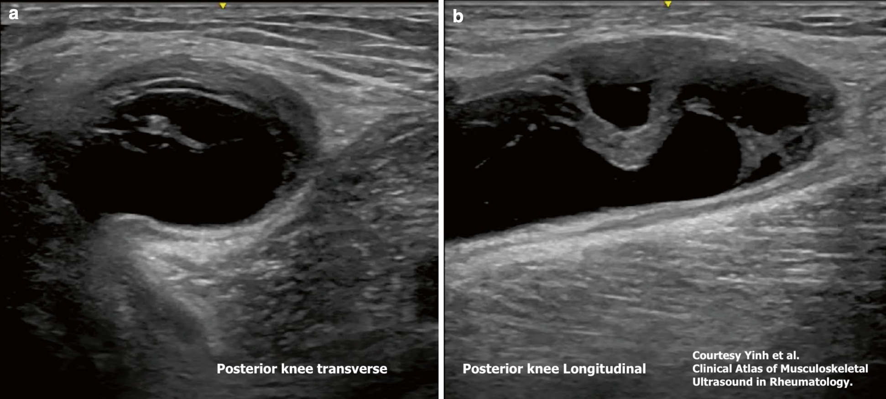
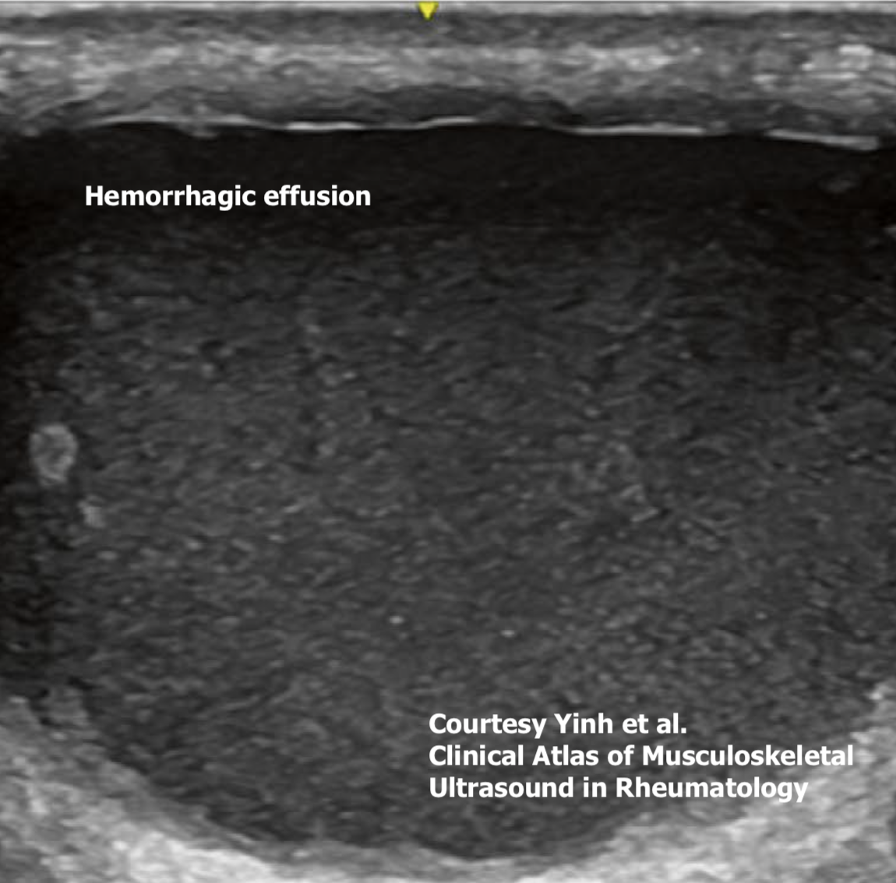

70-year-old man with multiple comorbidities and progressive bilateral knee pain. (Expand for full history & investigations.)
A 70-year-old man with a history of type 2 diabetes mellitus, hypertension, coronary
artery disease, MASLD, a previous TIA, atrial fibrillation and mild CKD presents with
progressive bilateral knee pain.
The pain comes on with use — walking or stairs — and improves with rest. There are
occasional episodes of knee swelling lasting a few days. He finds some benefit with
acetaminophen, and avoids NSAIDs because of his comorbidities.
An X-ray report comments on knee osteoarthritis. Serology is all negative and the CRP
is 7 mg/L. You do a bedside ultrasound.
Bedside Ultrasound — Suprapatellar Transverse, Maximum Flexion

Q1Which of the following findings is NOT seen on this suprapatellar maximum flexion transverse view of the knee?
Increased echogenicity of cartilage
Loss of the superior surface contour of cartilage
Femoral hyaline cartilage degeneration
Knee effusion
This image shows femoral hyaline cartilage degeneration in osteoarthritis.
Early degenerative change shows a diffuse increase in echogenicity of the cartilage while
cartilage width and the contour of the superior surface are maintained. Progressively there
is loss of the superior surface contour, then focal loss and thinning of the cartilage.
Eventually the cartilage damage can extend to affect the bony cortex of the femoral surface
in severe OA.


Suprapatellar Transverse, Flexion — Two Different Knees

Q2If you were to scan the knees in the suprapatellar maximum flexion transverse view and instead see these images, what would be the diagnosis?
Uric acid deposits (gout)
Chondrocalcinosis (CPPD)
Foreign bodies
Chondrocalcinosis on the left and double contour sign on the right
The images show intra-cartilaginous calcific deposits of the femoral cartilage in
CPPD arthropathy. Calcific deposits can be rounded hyperechoic deposits within the
cartilage, of various sizes (left image), or can look like dense hyperechoic deposition
within the cartilage (right image).

Calcium deposition is also commonly seen in the menisci.

The double contour sign is a hyperechoic band that appears parallel to the
bone, just above the cartilage. Calcium deposits, by contrast, are
intra-cartilaginous.
Q3Which of the following blood test panels should be ordered if chondrocalcinosis is seen on ultrasound or X-rays?
Calcium, phosphate, PTH, ALP, iron studies, TSH
Calcium, phosphate, magnesium, PTH, ALP, iron studies, creatinine
Calcium, phosphate, magnesium, PTH, ALP, iron studies, TSH
Calcium, phosphate, magnesium, PTH, iron studies, TSH
A secondary workup for CPPD involves laboratory testing to check for underlying metabolic
conditions. This evaluation is especially important for patients who are young (typically
under 50 years old), have severe or unusual polyarticular involvement, or experience
unusually heavy or recurrent flares.
The key metabolic associations are hyperparathyroidism, hemochromatosis,
hypomagnesemia, hypophosphatasia and hypothyroidism. The testing should reflect
the screening laboratory tests for these conditions.
Popliteal Fossa — Posterior Knee

New Information
The patient also complains of pain at the posterior knee. He is anticoagulated for his
atrial fibrillation. You decide to scan that area at the popliteal fossa.
Q4Which of the following is the most accurate sonographic diagnosis?
Popliteal cyst (Baker's cyst)
Knee effusion seen posteriorly
Hemorrhagic collection
Cyst extending from the meniscus
The popliteal or Baker's cyst lies postero-medially between the
semimembranosus tendon and the medial head of gastrocnemius, at the level of the upper
medial femoral condyle. There is often a unidirectional communication between the Baker's
cyst and the joint recess.
A hemorrhagic effusion, by contrast, is seen as echogenic fluid with
displaceable echogenic blood cells — worth keeping in mind in an anticoagulated patient.

Please answer the question before continuing.
—
Your score for this case
Summary: Mechanical bilateral knee pain in an older patient with a
radiograph reporting osteoarthritis is a common referral, and the suprapatellar transverse
view in maximum flexion is the window that makes the femoral hyaline cartilage assessable at
the bedside. Degeneration progresses in a recognisable order — increased echogenicity first,
with width and superior contour preserved, then loss of that contour, then focal loss and
thinning, and finally involvement of the underlying cortex. Learn to separate two things that
both brighten the cartilage: chondrocalcinosis in CPPD sits inside the
cartilage, whether as discrete rounded deposits or dense confluent deposition, and
it is also common in the menisci, whereas the double contour sign of gout
lies on top of the cartilage, parallel to the bone. Finding chondrocalcinosis is not the end
of the assessment: it prompts a metabolic screen for hyperparathyroidism, hemochromatosis,
hypomagnesemia, hypophosphatasia and hypothyroidism. Finally, posterior knee pain has its own
differential — a Baker's cyst sits postero-medially between the
semimembranosus tendon and the medial head of gastrocnemius, and in an anticoagulated patient
it is worth looking for the displaceable echogenic cells that mark a hemorrhagic collection
instead.